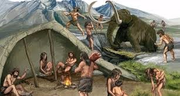
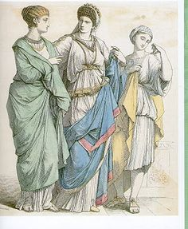
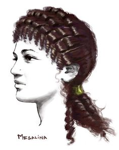

El proposito de este trabajo es ilustrar las diferentes vestimentas del hombre a travez de los
tiempos en diferentes
paises del mundo. Comenzando desde la pre-historia en donde las vestimentas de manera
tradicional, donde se puede observar quedando
el hombre no usaba ningun tipo de vestimentas, teniendo una evolucion progresiva de la
conciencia. Vemos que el hombre logra alcanzar
por necesidad vestirse usando desde hojas hasta pieles de animales lo que ocasiono, un despertar
en la conciencia evolutiva del hombre en cuanto
a la vestimenta en su modulo de pre-hisotira que termina con lo medieval. Donde el hombre
comienza a utilizar tunicas con apariencias de trajes
tradicionales de manera mas elegantes.
Desarrollo
PREHISTORIA DEL TRAJE.
Moda
La palabra moda proviene del francés mode, que a su vez proviene del latín modus, y significa manera
o medida. En este sentido, la palabra moda alude a la manera del momento. La moda, tradicionalmente
vista como la industria encargada de idear, materializar y comercializar prendas de vestir con un
significado cultural aceptado, representa todas las corrientes que implican patrones de
comportamiento populares dentro de un grupo social específico, que pueden lograr una diferenciación
significativa en comparación con las costumbres de otros conjunto de personas. Sin embargo, la
conducta y razonamiento de ciertos individuos puede estar ligada a las que fueron establecidas en
épocas anteriores o países que conservan una cultura con peculiaridades únicas.

Prehistoria
Como prehistoria se conoce, comúnmente, al periodo de la humanidad que precede a la invención de la
escritura. La palabra, como tal, se compone del prefijo pre-, y la voz historia. En este sentido, la
prehistoria abarca el periodo de tiempo que se extiende desde la aparición de los primeros
homínidos, antecesores del Homo Sapiens, hasta la producción de los primeros documentos escritos,
que datan del año 3.300 a. de C.
Historia
La historia es la ciencia que se encarga de estudiar el pasado de la humanidad. Por otra parte, la
palabra se utiliza para definir al periódico histórico que se inicia con la aparición de la
escritura e incluso para referirse al pasado mismo.
Estilo
El concepto de estilo tiene su origen en el término latino stilus. La palabra puede ser utilizada en
diversos ámbitos, aunque su uso más habitual está asociado a la apariencia, la estética o la
delineación de algo.
Para la moda, el estilo es la tendencia o la corriente que
predomina en una cierta época. El estilo, en este sentido, está formado por diversas cualidades
y características
Movimiento artístico
Denominada también como corrientes artísticas, son un conjunto de tendencias estéticas visibles en
las obras de arte de un período determinado que comparten características formales, técnicas y
filosóficas, es decir, que corresponden a una convención. las corrientes del arte incluyen pinturas,
esculturas y artes performáticas, pero el término también es aplicable a la música, la filosofía y
la literatura.
Nomada
Se denomina nómada a los individuos, tribus o pueblos que no poseen un lugar fijo para residir y que
constantemente se trasladan de un lugar a otro. La palabra nómada es un adjetivo que deriva del
latín nómos.
Sedentario
Se denomina sedentario al individuo o animal que permanece siempre en el mismo lugar. El término
sedentario es un adjetivo que apunta a todos aquellos seres vivos de pocos movimientos.
¿En qué consistían las primeras vestimentas?
De acuerdo con los arqueólogos y antropólogos, los signos de vestimentas más antiguos probablemente
consistían en pieles, cueros, hojas o postura, envueltas o atadas alrededor del cuerpo como
protección de los elementos de la naturaleza. el dominio del fuego y la preparación de cuero y las
pieles de animales que usaban como vestimenta, le permitió vivir en zonas cercanas a los glaciares
en la época de la glaciación. el aumento de la población hace que los alimentos provenientes de la
caza y la recolección eran insuficientes, esto lo impulso a cultivar las plantas que ya conocían y a
a mantener animales cerca suyos a modo de contar con mayor cantidad de alimentos. de esta forma
comienza la práctica de agricultura y la ganadería, lo que permite desarrolla técnicas de tejidos a
base de fibras vegetales, como, algodón y lana
EL TRAJE DE LOS PUEBLOS ANTIGUOS
Vestimenta antigua egipcia
La Indumentaria en Egipto era una consecuencia directa del clima: cálido y seco, y de la forma de
vida, al aire libre.
Indumentaria masculina y femenina. Imperio Antiguo.
Se usaban ropas exclusivamente de lino, aunque al principio se usaban fibras de juncos y cañas, se
impuso el lino por la creencia de que era más puro, y se cultivaba para fines textiles en exclusiva.
El color preferido era el blanco, aunque podía llevar algunos dibujos en los bordes.
La lana era conocida, pero fue considerada impura, como todas las fibras animales.
Maquillaje
El uso de productos cosméticos para reparar los desperfectos del tiempo o maquillar los accidentes
de la vida son por lo tanto legítimos. Esto explica la gran variedad de productos como aceites,
kohl, colirios, rojo para los labios y las mejillas, se usaban para los ojos: una negra para dibujar
el contorno y acentuar su forma de almendra, y otra verde para las pestañas y las cejas. El
maquillaje de ojos era empleado por hombres y mujeres. Al aplastar la galena, Los polvos fueron
utilizados por las damas para blanquearse la piel de la cara. Con este polvo hacían el kohl. Todos
estos productos se mezclaban con grasas animales para compactarlos y conseguir una conservación más
duradera.
Peinados
Entre los hombres era corriente el rapado de la cabeza, para cubrirse usaban pelucas postizas, y las
mujeres un tocado particular (claft) que se formaba con un lienzo cuadrado, hecho con una tela de
rayas, ajustado a la frente y con caídas a los lados.
Joyas
La preferencia de Egipto fue hacia el uso de colores brillantes, brillantes piedras y metales
preciosos. Oro fue ganado en grandes cantidades en el desierto oriental de Egipto, pero también
venía de Nubia, que durante siglos fue una colonia egipcia. El desierto Oriental fue también una
importante fuente de piedras coloreadas semipreciosas como la cornalina, amatista y jaspe. Era un
pueblo al que le gustaban las joyas, que utilizaban todas las clases sociales, aunque las de los
campesinos eran más sencillas y baratas, de loza, hueso o piedras de colores.
Las piedras más empleadas eran el lapislázuli, la cornalina, la turquesa, y los metales el cobre,
plata y el oro, que era mucho más abundante. Una creación especial de Egipto fue una especie de
gorguera, realizada con un conjunto de discos de metal y que se llevaba directamente sobre la piel,
o sobre una camisa de manga corta, y se anudaba en la espalda.
Vestimenta Antigua China
La vestimenta china: sus características básicas son de cuello cruzado, envolviendo la solapa
derecha sobre la izquierda, atando con fajín y una forma de blusa más falda o vestido largo. Estas
características se han conservado durante miles de años hasta la época de la República de China
(1912 – 1949 DC), cuando prevaleció el traje chino de túnica (traje Mao) y el cheongsam.
Las piedras más empleadas eran el lapislázuli, la cornalina, la turquesa, y los metales el cobre,
plata y el oro, que era mucho más abundante. Una creación especial de Egipto fue una especie de
gorguera, realizada con un conjunto de discos de metal y que se llevaba directamente sobre la piel,
o sobre una camisa de manga corta, y se anudaba en la espalda.
Peinado
Peinados chinos para mujer. Desde la antigüedad hasta la dinastía qing los hombres chinos han
mantenido su cabello largo de acuerdo con la visión confuciana de que el cabello largo era un signo
de piedad y virilidad. Sus estilos de adornos del cabello son desde la más remota antigüedad uno de
los más hermosos del mundo. La cultura china le ha dado una importancia preponderante al arreglo del
cabello a lo largo de su historia y un fuerte sentido simbólico; la forma de usar o cortarse el pelo
o los peinados marcaron siempre el estatus social o civil, la religión o las profesiones.
Vestimeneta antigua india
En la india antigua, la mujeres usaban una prenda llamada Sari
La mayoría de los Saris están confeccionados en algodón virgen, sin embargo; las mujeres más
adineradas vestían prendas de seda. Un Sari también puede ser de lana, pelo de cabra o lino y es una
pieza muy versátil. Las mujeres pueden envolverlo para formar una falda y llevar una de las esquinas
superiores hasta encima del hombro, o utilizarlo como velo sobre la cabeza. En el trabajo, las
mujeres podían envolver sus piernas en la parte inferior del Sari y formar una especie de pantalón
suelto.
Los caballeros usan Dhotis, que son piezas de tela de menor longitud que los Saris, que se envuelven
en tono a las piernas a modo de pantalones. Los Dhotis se fabricaron por regla general en tela
blanca y pueden llevar bordados elaborados. Tanto Saris como Dhotis, se confeccionaron en algodón,
lino, pelo de cabra, lana o seda
Cabello y accesorios
Los hombre usaban turbantes de tiras de tela envolviendo la cabeza, mientras que algunas mujeres
utilizan siempre velos y mascadas. La apariencia del cabello dentro de la costumbre al vestir de la
antigua India, era un aspecto importantísimo; por lo que era común que se realizaran peinados
complicados que se lograban usando cera de abeja y aceite de castor. También era muy visto que las
mujeres sujetaran sus largos cabellos con ayuda de bellos detalles como listones, boches y joyas.
Los hombres generalmente iban bien afeitados, a excepción de aquellos cuyo apego religioso les
permitía llevar la barba crecida.
VESTIMENTA CRETENSE Y GRIEGA
Moda Cretense
Los trajes que llevaba la mujer eran únicos en el Mediterráneo, las elegantes faldas de la mujer
eran única en el mundo antiguo,
El vestuario de los hombres tiene ciertos parecido con el vestuario del egipcio, usaban el torso
desnudo y una especie de taparrabos enrollado en la cintura o sujeto a un cinturón. Estos vestuarios
variaban dependiendo su clase social y a la región y les gustaba ya que les dejaba la cintura
marcada.
La forma del schenti masculino era mucho más variado que el egipcio y además podía variar el tipo de
material, estos podían ser cuero, lino y lana. Los hombres por lo general llevaban turbantes en la
cabeza. Otras prendas consistían en largas túnicas hechas de una sola pieza, o de mantos cortados al
sesgo para los sacerdotes. Ellos de costumbre estaban descalzo, pero para caminar o trabajar
utilizaban sandalias o botas.
Los trajes que llevaba la mujer eran únicos en el Mediterráneo, las faldas de la mujer eran única en
el mundo antiguo, su primitiva falda se fue alargando hasta llegar al suelo, utilizaban faldas
acampanadas y un apretado corsé adornado con bordados que deja los pechos al descubierto. En
estatuillas halladas se observan mujeres vestidas con los largos vestidos cretenses de volantes y
chaquetas con mangas cortas, ajustadas y abiertas, mostrando abultados senos, también llevaban
cinturones decorados con piezas metálicas o eran de metal entero al igual que los hombres, los
metales mas utilizados para decorar los cinturones eran plata, oro y bronce.
Los peinados de las mujeres eran muy variados, tocados muy complicados, y eran considerados como los
primeros sombreros elegantes de la historia del traje.
La gente rica llevaba collares de lapislázuli, ágata, amatista y cristal de roca, mezclados con
perlas.
Moda griega
Los más importante para el hombre griego era que sus vestimentas fueran hechas de linio, lana y de
pieles.
Las vestimentas de los hombres y mujeres no tenían ningún tipo de costura, solo eran pedazos de
telas en forma rectángula los cuales ellos mismos se las envolvían en su cuerpo formando drapeados y
ajustándoselo a la cintura con cinturones y sujetando los hombros con alfileres formando así una
túnica, no era muy amante a los colores en la vestimenta sus colores más comunes eran marfil o
beige.
De costumbre llevaban la cabeza descubierta, pero a beses la resguardaban con un gorro de piel
llamado pileo, o con un sombrero de fieltro con alas conocido como petaso. El calzado era una
sandalia hechas en cuero y trenzada hasta los tobillos con pequeñas algunos de los modelos eran
crépida, soleá y carbatina.
Las principales vestimentas griegas eran:
Peplo: era una túnica hecha de lana atada a los hombros con un broche, esta
vestimenta era usada por las mujeres.
Quitón: una prenda derivada del peplo, confeccionada en algodón o lino, que
envolvía el cuerpo y se sujetada en los hombros con una aguja, quedando abierto por uno de los
lados, este vestido generalmente era más largo para las mujeres que para los hombres.
Himatión: era un manto usado sobre el quitón, que se echaba sobre el hombro
izquierdo y se recogía por el lado opuesto, en caso de guerra, se cambiaba por una capa llamada
clámide.
VESTIEMNTA ETRUSCA Y ROMANA
Vestimenta Etrusca
Vestimenta masculina: al principio los se vestían de forma tradicional pero atreves
del tiempo
fueron adoptando la moda griega, sobre todo los aristócratas, que obligaban a los hombre a tener el
rostro afeitados y el pelo corto. Durante largo tiempo conservaron sus cabellos largos y su barba
puntiaguda, calzaban sandalias de punta curva y se vestían con larga túnica y manto oscuro y
adornados, pero los etruscos se dejaron influir por la moda romana, largas túnicas y togas, calzaban
sandalias.Las faldas cortas y túnicas en forma de T eran prendas que los hombres etruscos usaba
habitualmente. La túnica del estilo griego se había alargado hasta el tobillo. La tebenna era muy
apreciada por reyes y aristócratas, estas se llevaba encima de la túnica blanca. Para las
indumentarias ceremonia se vestían con una larga túnica ceñida por un ancho cinturón y un manto de
lana, sujeto al pecho por una fíbula (una especie de botón) y un gorro cilíndrico, atado bajo la
barbilla, que terminaba en un cono truncado.
Vestimenta Femenina: Las mujeres por igual fueron adoptando la moda de griega,
túnicas y peplo, se cortaban los cabellos muy corto y se peinaban con elegancia. Calzaban sandalias
muy ligeras estas les permitían mostrar mucho su piel. En tiempos de frío y las demás estaciones del
año usaban túnicas y mantos más gruesos, calzado adecuado y se cubrían la cabeza con mantos. Los
vestidos de las clases más pobres se confeccionaban con tejidos burdos y eran de formas muy
sencillas, viéndose mas practico y menos elegantes. Las mujeres de la Aristocracia llevaban una capa
de color escarlata con un chiton negro, utilizaban una túnica larga y casi transparente un poco
gruesa, Las mujeres llevaban chales drapeados como el himation o encima de la cabeza con los
extremos caídos sobre los hombros.

Maquillaje y cuidados: Las etruscas se marcaban los ojos y se pintaban las cejas,
el peinado de moda consistía en rizar mucho el flequillo y llevar el resto del cabello trenzado o
recogido hacia atrás lo adornaban con espirales de bronce, las mujeres hacían ejercicio desnudos y
se depilaban el cuerpo con cera para tener una piel más suave. Algunos hombres se maquillaban.
Tejidos: Los Etruscos empleaban distintos tejidos principalmente de algodón y lana
de color amarillo pálido y rojo tela brillante, y en naranjas, tenían estampados llamativos y
alegres, combinaban diseños distintos.
Calzado: sandalias, botas con cordones, zapatos blandos y cómodos, zapatos con
tiras en los tobillos. Las mujeres etruscas llevaban zapatos blandos de tipo mocasín.
Vestimenta romana: El vestido masculino de un romano estaba formado por dos túnicas
La túnica fue evolucionando en colores, formas y dimensiones. El general triunfador lucía la túnica
palmata, bordada con palmas doradas, era una toga totalmente púrpura, lujosamente bordada con
imágenes de personajes y eventos. La prenda tradicional romana era por excelencia la toga desde los
tiempos etruscos, debido a la gran cantidad de pliegues y a las vueltas que habían de darse a un
único trozo de tela. Desde el siglo I a.e.c., la vestimenta principal de los romanos fue la toga,
tanto para las mujeres como para los hombres. Posteriormente la prenda femenina se llamó palla. Las
mujeres llevaban también túnica, debajo de ella una especie de camisa y una fascia pectoralis para
sostener el pecho. La ropa interior no existía como tal, las romanas cuando tenían frío, abrigaban
sus piernas con unas vendas. La túnica pronto se convirtió en ropa interior y en vez de toga
utilizaron una stola, o un manto parecido al kitón griego, con mangas y pliegues, que llegaba hasta
los pies. Era ceñido a la cintura y contaba con un bordado en su parte inferior y en el cuello. Las
jóvenes se recogían los cabellos en un nudo o en trenzas, las señoras casadas preferían el peinado.
También utilizaban postizos y recogidos, tanto hombres como mujeres se solían tintar el pelo.
Calzado: El calzado tanto de hombre como de mujeres era el mismo, se diferenciaban
en el color y el grosor de la pieles, casa usaban sandalias solea, para la calle empleaban zapatos
más fuertes, calce us; el calceus patricius era rojo; el calceus senatorius, negro. Otros calzados
eran los zuecos soccus, pasando por el cothurnus, bota, que cubre hasta media pierna y la caliga que
era el calzado de los militares.
Maquillajes y peinados: Como productos cosméticos utilizaban tierras coloreadas
para el maquillaje y las mascarillas de belleza, un polvo negro similar al kohl egipcio, como
pintura de ojos para realzar la mirada y tintes para el cabello, como la henna importada de Egipto o
un tinte rojo a base de grasa de cabra y de ceniza de haya que se producía en Germania, conocido
como sapo. También se usaban aceites y ungüentos en el cuerpo y se perfumaban profusamente los
vestidos desde las primeras importaciones de sustancias perfumadas de Oriente.
Los cabellos femeninos se arreglaban con gran sencillez y con un uso limitado de perfumes, como el
peinado a la Octavia, que constaba en un copete sobre la frente y una trenza recogida en un moño en
la nuca. En la época Flavia se puso de moda añadir postizos al propio cabello, en forma de bucles
dispuestos en corona sobre la frente y múltiples era los peinados con diferentes combinaciones de
rizos y bucles.

VESTIMENTA DEL IMPERIO BIZANTINO
Maquillajes y peinados:
a vestimenta de los bizantinos se repercute directamente al hecho de las costumbres y las
tradiciones sociales que poseía Bizancio en ese entonces. Los ciudadanos de Bizancio eran
reconocidos por mostrar un aspecto muy recto y formal en sus vestimentas.
La vestimenta bizantina se diferencia en el extremo de la vestimenta femenina y la masculina. En
ambos géneros se presentan ciertas características que se pueden destacar, las cuales tienden a ser
muy interesantes por diversas razones, y aportar información vital sobre las costumbres de Bizancio.
Entre estas razones se puede destacar el hecho de que las raíces de los bizantinos se vinculan
directamente a la cultura griega, romana, religiosa y oriental, por lo que la vestimenta de los
bizantinos se toma de la influencia de estas culturas preexistentes.
Tejido de la vestimenta bizantina
los bizantinos acostumbraban a usar elementos tejidos como la seda, el tafetán, el algodón y el
terciopelo, principalmente.
Con respecto a los colores más utilizados, se determinó que los bizantinos utilizaban principalmente
el amarillo y el rojo. Este juego de colores especialmente muy popular se debe a las influencias
orientales presentes.
El bordado que se manifiesta en los diferentes diseños de las vestimentas, se inclinan claramente
como religiosos, y esto se demuestra por medio de la cultura bizantina, la cual toma muy en serio la
religión cristiana en muchos aspectos de Bizancio, como sus costumbres, arte y cultura general.
Calzado de la vestimenta bizantina
los bizantinos acostumbraban a usar elementos tejidos como la seda, el tafetán, el algodón y el
terciopelo, principalmente.
El calzado de los hombres y las mujeres se influenció por el hecho de que depende de elementos
clásicos o recurridos principalmente, siendo la seda bordaba uno de los principales de ellos.
La vestimenta bizantina femenina como intención la de ocultar la verdadera silueta
o
forma de la mujer.
Esto se lograba por medio de capas, las cuales se pueden traducir en “una túnica debajo de otra
túnica”.
La primera túnica que debían usar las mujeres consistía en una prenda que le llegara hasta los
tobillos,
la cual era ajustada y ceñida. Posteriormente a esto, la mujer debía utilizar una túnica, en muchos
casos, más corto que el otro, la cual dejaba ver la primera prenda descrita.
Este vestido secundario o exterior también podía ir ceñido a la cintura, y está dejaba en muchas
ocasiones las utilizaban como vestimenta principal.
Las mujeres acostumbraban a llevar otras prendas adicionales a estas, como puede ser el caso de las
estolas, las cuales son una influencia romana, y los mantos, los cuales iban encima de las estolas.
Calzado de la vestimenta bizantina
los bizantinos acostumbraban a usar elementos tejidos como la seda, el tafetán, el algodón y el
terciopelo, principalmente.
El calzado de los hombres y las mujeres se influenció por el hecho de que depende de elementos
clásicos o recurridos principalmente, siendo la seda bordaba uno de los principales de ellos.
Vestimenta masculina: Al igual que en el caso de las vestimentas femeninas, los
hombres
también debían llevar capas en la suya, por el mismo motivo de ocultar la figura del mismo.
Los hombres debían usar ropa interior ajustada o ceñida, y posteriormente a esto, debían utilizar
una
túnica, la cual les llegaran hasta las rodillas o tobillos, la cual era ajustada, y así poder
utilizar
una túnica. Esta túnica se conoce con el nombre de “dalmática”, la cual poseía manos anchas y
largas.
Al igual que en el tejido mismo, la influencia oriental en la cultura bizantina fue muy determinante
para el calzado mismo. Los materiales y los colores también hacían entender el mismo mensaje de
pertenencia a cierta clase social.
EEl calzado de los hombres y las mujeres se influenció por el hecho de que depende de elementos
clásicos o recurridos principalmente, siendo la seda bordaba uno de los principales de ellos.
EL TRAJE MEDIEVAL
Traje Medieval
Durante el siglo medieval, la forma de vestir en el reino cristiano de la península ha experimentado
un considerable desarrollo, desde la tradicional túnica tradicional hasta el traje corto que existe
desde el siglo XIV, así como los antiguos orígenes de la indumentaria moderna. Si bien la influencia
de la indumentaria islámica en la indumentaria española le confiere ciertas características, esta
evolución es paralela a la evolución experimentada por otros países europeos.
En el primer siglo de la Edad Media, se estableció el método de vestir durante la mayor parte de
este período. Hasta finales del siglo XIV, la vestimenta europea era un derivado de la túnica, el
mantón y el manto romanos, a la vestimenta europea se le añadieron los elementos de vestimenta del
pueblo germánico y ciertas características de la vestimenta bizantina. Dominan los vestidos sueltos,
muy sencillos, uniformes y de confección personalizada
Vestido durante la Alta Edad Media.
El vestido románico de las clases altas
La característica de la indumentaria románica es también que sus cambios son mucho menores que en
siglos anteriores. En lo que respecta a la clase alta, se trata básicamente de una combinación de
dos túnicas, a saber, el brial (el hilo rico en tejidos bordados y teñidos) y las túnicas de piel o
amasados.
El soborno es una túnica larga con mangas estrechas (saya). Hay una grieta, apta para montar a
caballo. Como prenda de lujo, los sobornos se hacen con tejidos ricos, como cendal, que es una seda
muy fina, o xamet o cyclaton, que incluye oro. La piel también se llama pellizcar, es un poco más
corto que esto y tiene mangas más anchas.
.
El vestido románico de las clases bajas
La ropa más utilizada por la mayoría de la gente es la saya, también conocida como aljuba. Las
faldas de los hombres no suelen superar las rodillas, mientras que las de las mujeres no suelen
superar las rodillas. En ambos casos, están ceñidos por un cinturón.
Una característica más de la saya es la forma de su cuello, llamado amigaut, que tiene esquinas
redondeadas con costuras verticales en la parte inferior.
Vestuario Romanico
Glosario
Calceus:
El calceus era un pedazo de cuero que se ponian los romanos para proteger el talon.
Senatorius
La palabra senatorial proviene del latín. Deriva de senatorius, senatoria, senatorium
cuyo significado es “de senador”.
Etrusca
Que pertenecía al pueblo que habitó en Etruria antes de ser dominado por Roma.
Bizancio
Bizancio fue una ciudad griega, capital de Tracia, situada en la parte occidental de la
entrada del estrecho del Bósforo.
Bizantina
Relativo al antiguo imperio romano de Oriente o a la ciudad de Bizancio.
Kohl
El kohl es un cosmético a base de galena molida y otros ingredientes, usado
principalmente por las mujeres de Oriente Medio, Norte de África, África subsahariana y
Sur de Asia, y en menor medida por los hombres, para oscurecer los párpados y como
máscara de ojos.
Elizabeth Mendez Polanco
Soy Elizabeth Mendez Polanco, nacida y criada en Santo domingo Oeste (Manoguayabo) soy estudiante
de la carrera de diseño de modas en la Universida Autonoma de Santo Domingo (UASD). Soy capaz de aprender como estudiante
de la carrera de diseños de moda trata de aprender y dar lo mejor de mi para asi tener exito en mi carrera.
Rosmery Paulino
Es maestra en la universiad (UASD) y es la directora de la escuela de diseños de moda de la
misma. Como maestra es muy responsable imparte su clase de una manera clara y precisa, con el fin
de que los estudiantes aprendan lo que se imparte en la clase, es muy dinamica y le gusta que sus
estudiantes tengan el mayor aprendizaje de lo que es la moda y su historia a lo largo del tiempo.
Bibliografia
arteguias, 2013, El Vestido Medieval. Alta y Plena Edad Media, 20-04-2021.